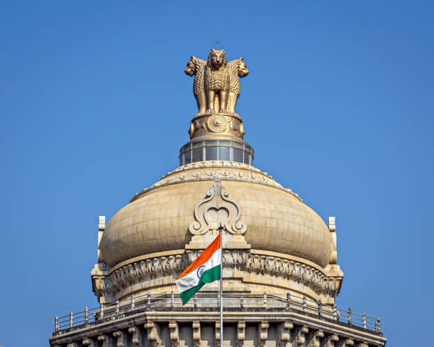

From your Gram Sabha to Rashtrapati Bhavan — every rank, explained.
Two ladders run through India: the political ladder — Panchayat to Parliament to President — and the service ladder — school exams to the IAS, IPS and beyond. This guide climbs both, rung by rung, in plain language.

Who governs, and who runs the government
Politicians are elected to decide policy. Officers are selected through exams to implement it. Both ladders start local and end at the top of the Republic — this site is organised the same way.
The Political Ladder
Sarpanch → MLA → Chief Minister → MP → Prime Minister → President. Filled by elections, party tickets and the will of voters.
Enter the Political SystemThe Service Ladder
Board exams → Graduation → UPSC/State PCS/SSC → SDM, DSP, IAS, IPS and beyond. Filled by competitive exams and merit rank.
Enter Civil ServicesThe questions this guide answers
What is the Lok Sabha?
The directly elected House of the People — how its 543 members are chosen, and why it controls the government's survival.
Read moreWhat is the Rajya Sabha?
The Council of States — indirectly elected, never dissolved, and why it exists at all.
Read moreHow is a Prime Minister made?
Not directly elected by the country — the path from MP to party leader to head of government.
Read moreHow is a CM or MLA chosen?
State elections, constituencies, and how a Vidhan Sabha picks its Chief Minister.
Read moreHow is the President elected?
An electoral college of MPs and MLAs — India's most indirect, most symbolic election.
Read moreHow are parties and candidates picked?
Registration, recognition, symbols, and how a party decides who gets the ticket.
Read moreWhat are the types of Ministers?
Cabinet Minister, Minister of State, MoS (Independent Charge) — and how a portfolio like Education is assigned.
Read moreHow does local government work?
Gram Panchayat to Zilla Parishad to Municipal Corporation — democracy's smallest unit.
Read moreWhat is the exam ladder?
From board exams to UPSC — every major competitive exam in India, mapped in order.
Read moreHow does the UPSC exam work?
Prelims, Mains, Interview — and how a single rank decides a career.
Read moreHow are IAS and IPS decided?
Rank, preference and vacancy — the formula behind service allocation.
Read moreWhat about SDM and other officers?
State PCS, SDM, IRS, IFS, and how the police hierarchy climbs to IPS.
Read moreOne country, two ladders, one guide.
Pick the ladder you want to climb first — the explanations link to each other as the real system does.